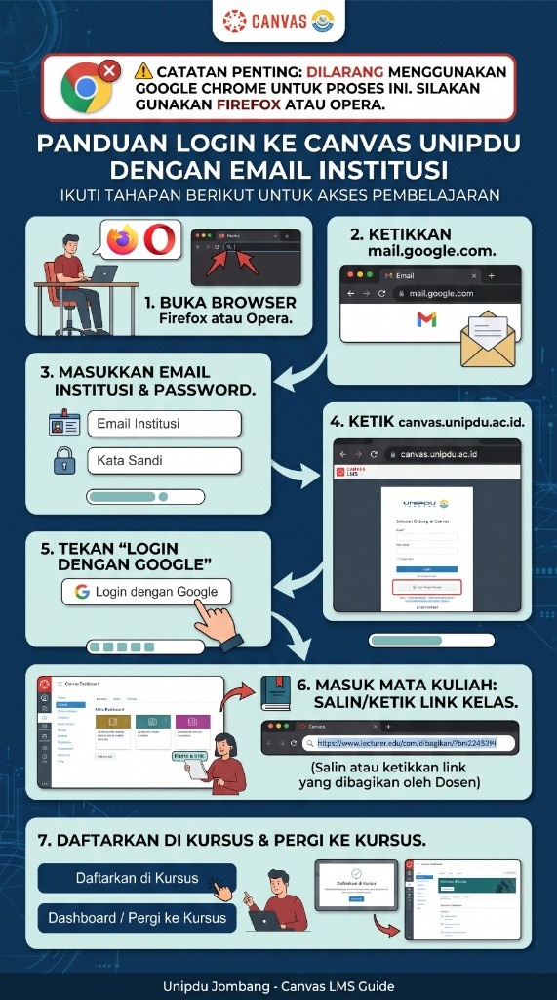

1
Buka Browser Firefox atau Opera
Tahap PersiapanJalankan aplikasi browser Mozilla Firefox atau Opera di perangkat laptop/komputer atau smartphone Anda.
Ikuti tahapan berikut untuk mengakses sistem perkuliahan daring (LMS Canvas) Universitas Pesantren Tinggi Darul 'Ulum menggunakan akun email resmi sivitas akademika.
Untuk proses autentikasi awal ini, JANGAN menggunakan Google Chrome karena sinkronisasi akun Gmail pribadi akan memicu konflik sesi. Silakan gunakan Mozilla Firefox atau Opera Browser.
Jalankan aplikasi browser Mozilla Firefox atau Opera di perangkat laptop/komputer atau smartphone Anda.
Pada kolom alamat (URL bar) browser Anda, ketikkan mail.google.com untuk membuka portal email Google Workspace.
Ketikkan alamat email institusi UNIPDU Anda dengan format fakultas: nama@fakultas.unipdu.ac.id (contoh: nama@fai.unipdu.ac.id untuk FAI, nama@fik.unipdu.ac.id untuk FIK), kemudian masukkan kata sandi resmi Anda.
Di tab baru pada browser Firefox/Opera yang sama, buka alamat LMS Canvas resmi UNIPDU yaitu canvas.unipdu.ac.id.
Pada halaman selamat datang Canvas UNIPDU, JANGAN mengisi username/password secara manual di form atas. Langsung klik tombol “Login dengan Google” di bagian bawah.
Sistem akan otomatis mengenali email institusi UNIPDU yang telah login di Langkah 3.
Setelah berhasil masuk ke Dashboard Canvas, salin atau ketikkan tautan (link) pendaftaran mata kuliah yang telah dibagikan oleh Dosen pengampu Anda ke URL bar browser.
Klik tombol “Daftarkan di Kursus” (Enroll in Course). Setelah notifikasi pendaftaran berhasil muncul, klik “Dashboard / Pergi ke Kursus” untuk mulai mengikuti materi kuliah dan tugas.
Simpan atau bagikan gambar panduan berikut ke rekan mahasiswa dan grup kelas Anda.

Belum memiliki akun email institusi atau lupa kata sandi email nama@fakultas.unipdu.ac.id? Pengajuan reset password dapat dilakukan langsung secara mandiri melalui siakad.unipdu.ac.id atau datang ke kantor Pusat Komputer & Jaringan (Puskomnet) Kampus Utama UNIPDU.